靈感有限研發團隊
陳欣緣
田野考察、影音製作、市集規劃、展場規劃、網頁音樂。

黃郁芸
美術總監、美術創作、社群經營、社群行銷、周邊繪製。
劉佳美
文稿創作、財務管理、採購庫存、品牌公關、手作編織。
劉思妤
書籍總編、文稿創作、專案管理、設計編排、田野調查。
何泠琳
展場設計、商品開發、網頁設計、平面設計、書籍編輯。
自陽明山總部出發，追蹤全臺島嶼隱匿的妖靈。加入登靈司，將地方傳說錄入造冊。
座落於陽明山由妖靈靈王主導機構，負責全面追蹤與調和臺灣各地因過載現象所產生的「靈」異常失控事件。
觀靈員從臺北陽明山出發，沿著特定路徑環繞島嶼一圈，沿途採集紀錄地方異聞、怪談以及捕捉「靈」。
並非單純的消滅或封印，而是透過理解、檔案歸類與妖靈溝通，給予妖靈在現代共同生存的合法錄入造冊身份。
靈的起源，雖仍籠罩在謎霧中，當五項指標皆滿足時，天地間便會誕生一隻妖靈。
隨著城鄉擴張與自然環境的劇烈變遷，「過載現象」打破了原有的秩序，靈開始異常聚集並失去控制，妖靈無法正常運用力量，更反被其影響神智，層出不窮的妖靈攻擊事件，使妖靈世界陷入前所未有的動盪，登靈司的責任，即是記錄造冊並引導這些「妖靈」。
觀靈員在進入登靈司後，在開始實地調查前，會依據自身的感覺選擇派系與隨行妖靈，獲得助益。
與大自然有著千絲萬縷的連結，常被視為與自然最親近的「擬態系」。
常被視為意見領袖，在無形之中引領妖靈界的「賦靈系」。
不同派系的意志，將決定你與地方妖靈邂逅時的引導效率。
不論是歷史悠久的水金九礦坑舊址、還是神木聳立的司馬庫斯山林，每一處特定的地理空間，都只有當地會誕生的妖靈在此。
觀靈員每一次觀測成功並進行造冊的過程，都是在與當地的妖靈締結信任關係。
！ 檢測儀器未連線。請先前往「首頁」完成觀靈員驗證登入，並確認進行初始隨行妖靈綁定。
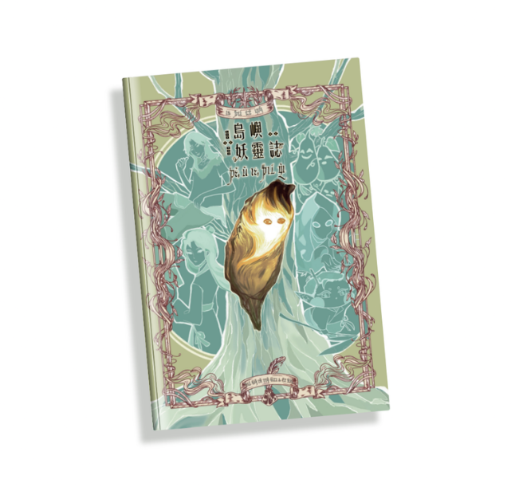
《島嶼妖靈誌》收錄了妖靈界的發展、妖靈派系、誕生故事，甚至還可以看到獨家報導的妖靈八卦月報，一窺妖靈們的日常生活。
$520 NTD
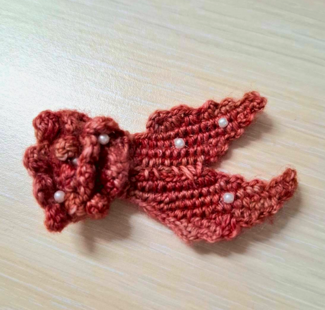
珊鯉代表色結合其外形特徵，點綴於髮間，為穿搭增添一抹鮮豔色彩。
$270 NTD
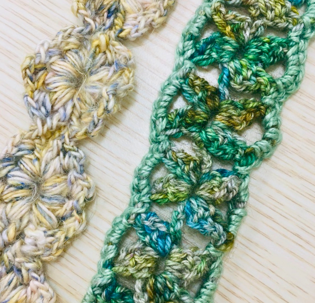
以妖靈代表色線材鉤織成獨特花樣，使其成為與妖靈連結的飾品。每一次的配戴，不僅是造型上的點綴，更是讓妖靈陪伴左右。
$460 NTD
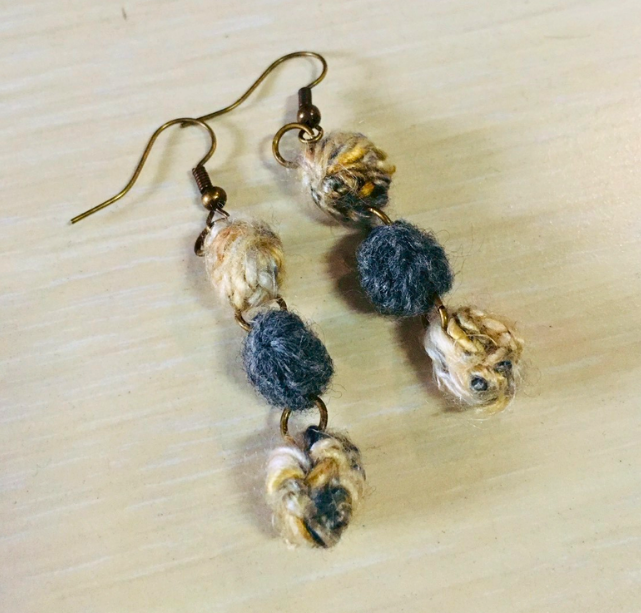
以金瓜兒色系線材鉤織成顆顆圓球，隨步伐搖曳，彷彿金瓜兒在耳畔嬉鬧。
$200 NTD
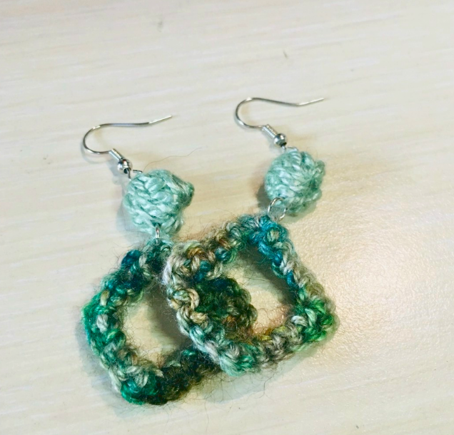
以竹製線材交織小竹童代表色系，化為耳畔垂掛的一抹綠意，感受清涼自在。
$200 NTD
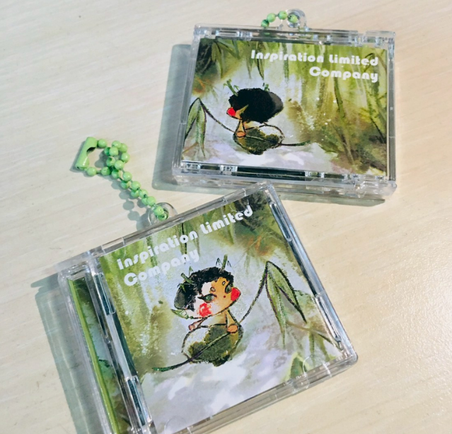
以復古 CD 為靈感設計，將妖靈形象濃縮進一張迷你專輯裡，具有NFC功能的雙面夾層壓克力CD盒吊飾，還有金穿山甲款造型。
$160 NTD
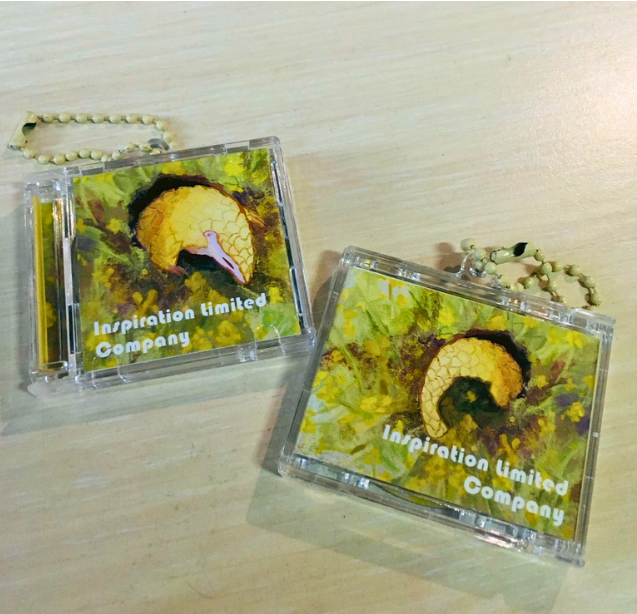
以復古 CD 為靈感設計，將妖靈形象濃縮進一張迷你專輯裡，具有NFC功能的雙面夾層壓克力CD盒吊飾，還有小竹童款造型。
$160 NTD
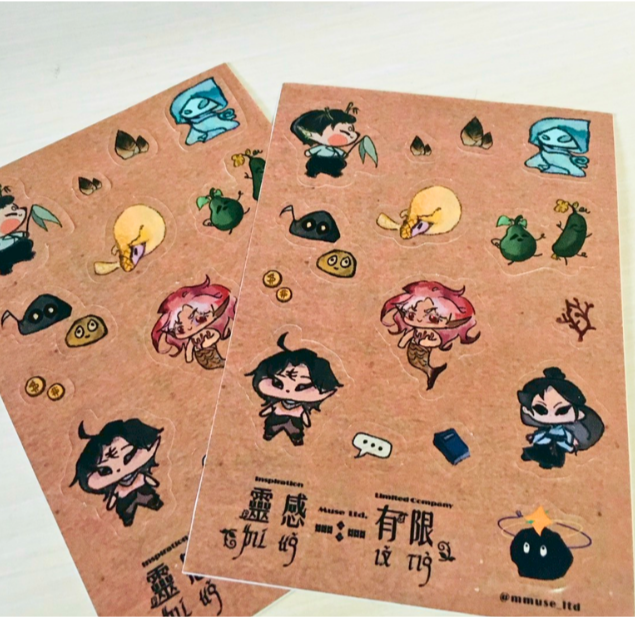
收錄各種妖靈的Ｑ版形象，在日常用品上留下小小的妖靈印記，使其像是隨時陪伴左右。
$60 NTD
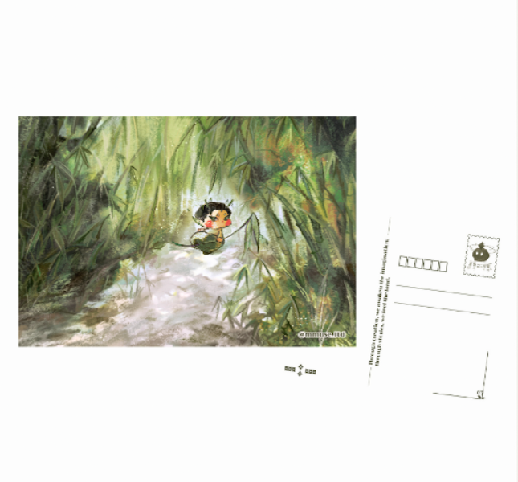
小竹童的背影隱沒於竹林之間，為竹林深處的故事留下無限想像。
$60 NTD
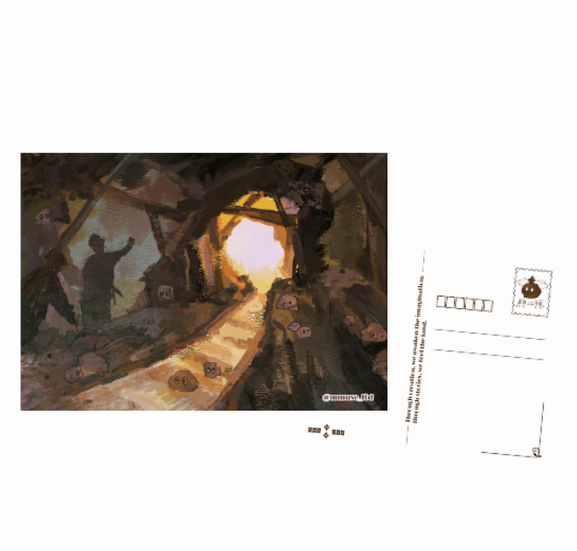
金瓜兒穿梭於礦坑之間，彷彿訴說著礦山記憶的流轉。
$60 NTD
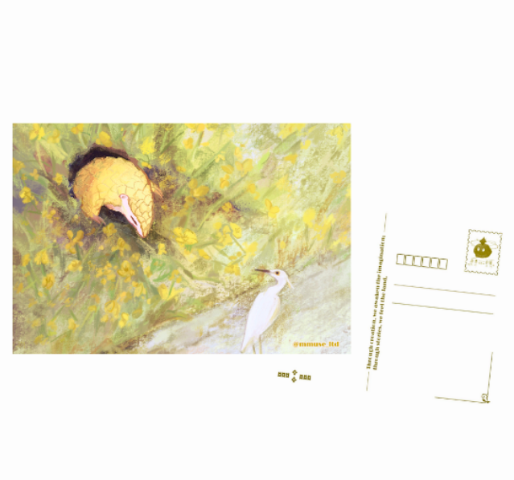
剛甦醒的金穿山甲緩緩探出洞穴，與路過的白鷺不期而遇，代表著耕作期的到來。
$60 NTD
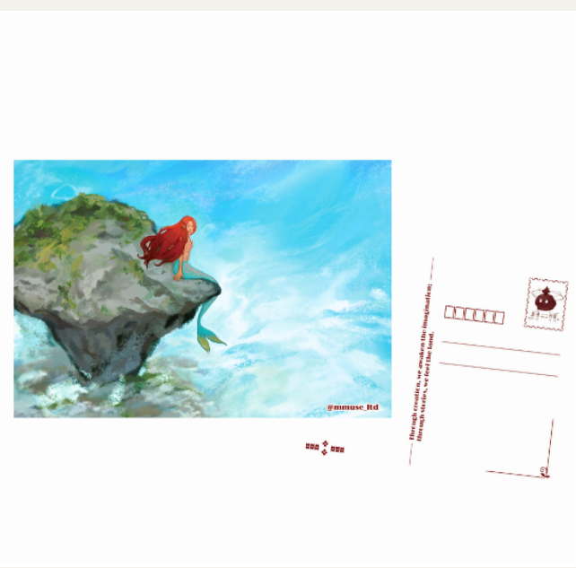
遠眺蔚藍大海的另一端，彷彿在尋找著下一個待開發的航線。
$60 NTD
田野考察、影音製作、市集規劃、展場規劃、網頁音樂。
美術總監、美術創作、社群經營、社群行銷、周邊繪製。
文稿創作、財務管理、採購庫存、品牌公關、手作編織。
書籍總編、文稿創作、專案管理、設計編排、田野調查。
展場設計、商品開發、網頁設計、平面設計、書籍編輯。